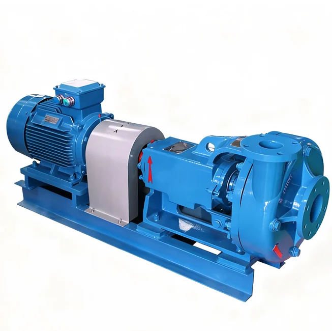
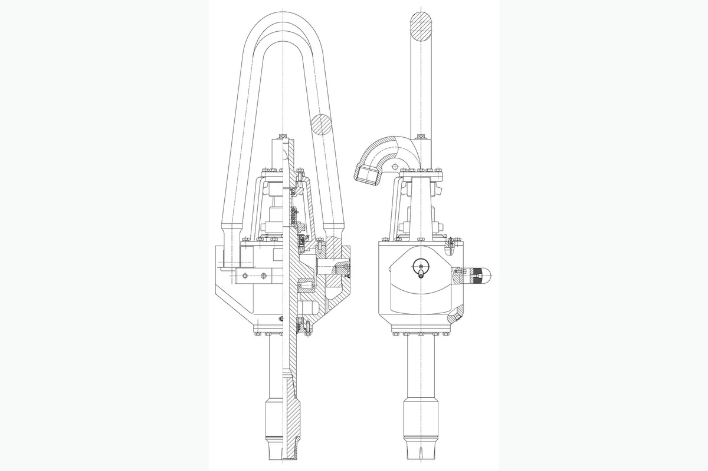

How to Request a Quotation
- Send part number or equipment model.
- Attach product photo or technical drawing if available.
- We will check compatibility and prepare quotation details.
Drilling Rigs and Drawworks Accessories
Sand Pump for drilling rig and drawworks maintenance, hoisting systems, rotary equipment and oilfield replacement projects. Buyers can send part number, equipment model, product photo or technical drawing for quotation.

SL Drilling Swivel for oilfield equipment maintenance and replacement projects. Buyers can send part number, equipment model, product photo or technical drawing for quotation.
Specification matching, export packaging, WhatsApp and email communication support for oilfield buyers.
Description
Images marked as description materials are placed here and are not used as the product card thumbnail.

Part Number Matching
Source material contained reference numbers, but the original table names were not reliable enough for direct publication. The numbers below are kept for matching and quotation confirmation.
Send OEM part number, pump model, rig model, product photo or drawing. We support part number matching, drawing matching and sample matching for drilling rig, mud pump, drawworks, hydraulic and wellhead equipment components.
| Part Name / Component | Reference No. / Model Code | Applicable Equipment | Description / Remark |
|---|---|---|---|
| Sand Pump component | SL135 | Drilling Rigs and Drawworks Accessories | Reference number retained from source material. Confirm against equipment model, product photo or technical drawing before quotation. |
| Sand Pump component | SL160 | Drilling Rigs and Drawworks Accessories | Reference number retained from source material. Confirm against equipment model, product photo or technical drawing before quotation. |
| Sand Pump component | SL170 | Drilling Rigs and Drawworks Accessories | Reference number retained from source material. Confirm against equipment model, product photo or technical drawing before quotation. |
| Sand Pump component | SL225 | Drilling Rigs and Drawworks Accessories | Reference number retained from source material. Confirm against equipment model, product photo or technical drawing before quotation. |
| Sand Pump component | SL315 | Drilling Rigs and Drawworks Accessories | Reference number retained from source material. Confirm against equipment model, product photo or technical drawing before quotation. |
| Sand Pump component | XSL450 | Drilling Rigs and Drawworks Accessories | Reference number retained from source material. Confirm against equipment model, product photo or technical drawing before quotation. |
| Sand Pump component | 1350 | Drilling Rigs and Drawworks Accessories | Reference number retained from source material. Confirm against equipment model, product photo or technical drawing before quotation. |
| Sand Pump component | 1600 | Drilling Rigs and Drawworks Accessories | Reference number retained from source material. Confirm against equipment model, product photo or technical drawing before quotation. |
| Sand Pump component | 1700 | Drilling Rigs and Drawworks Accessories | Reference number retained from source material. Confirm against equipment model, product photo or technical drawing before quotation. |
| Sand Pump component | 2250 | Drilling Rigs and Drawworks Accessories | Reference number retained from source material. Confirm against equipment model, product photo or technical drawing before quotation. |
| Sand Pump component | 3150 | Drilling Rigs and Drawworks Accessories | Reference number retained from source material. Confirm against equipment model, product photo or technical drawing before quotation. |
| Sand Pump component | 4500 | Drilling Rigs and Drawworks Accessories | Reference number retained from source material. Confirm against equipment model, product photo or technical drawing before quotation. |
| Sand Pump component | 150 | Drilling Rigs and Drawworks Accessories | Reference number retained from source material. Confirm against equipment model, product photo or technical drawing before quotation. |
| Sand Pump component | 180 | Drilling Rigs and Drawworks Accessories | Reference number retained from source material. Confirm against equipment model, product photo or technical drawing before quotation. |
| Sand Pump component | 190 | Drilling Rigs and Drawworks Accessories | Reference number retained from source material. Confirm against equipment model, product photo or technical drawing before quotation. |
| Sand Pump component | 250 | Drilling Rigs and Drawworks Accessories | Reference number retained from source material. Confirm against equipment model, product photo or technical drawing before quotation. |
| Sand Pump component | 350 | Drilling Rigs and Drawworks Accessories | Reference number retained from source material. Confirm against equipment model, product photo or technical drawing before quotation. |
| Sand Pump component | 500 | Drilling Rigs and Drawworks Accessories | Reference number retained from source material. Confirm against equipment model, product photo or technical drawing before quotation. |
| Sand Pump component | 1000 | Drilling Rigs and Drawworks Accessories | Reference number retained from source material. Confirm against equipment model, product photo or technical drawing before quotation. |
| Sand Pump component | 1200 | Drilling Rigs and Drawworks Accessories | Reference number retained from source material. Confirm against equipment model, product photo or technical drawing before quotation. |
| Sand Pump component | 1300 | Drilling Rigs and Drawworks Accessories | Reference number retained from source material. Confirm against equipment model, product photo or technical drawing before quotation. |
| Sand Pump component | 2200 | Drilling Rigs and Drawworks Accessories | Reference number retained from source material. Confirm against equipment model, product photo or technical drawing before quotation. |
| Sand Pump component | 3200 | Drilling Rigs and Drawworks Accessories | Reference number retained from source material. Confirm against equipment model, product photo or technical drawing before quotation. |
| Sand Pump component | 110 | Drilling Rigs and Drawworks Accessories | Reference number retained from source material. Confirm against equipment model, product photo or technical drawing before quotation. |
| Sand Pump component | 135 | Drilling Rigs and Drawworks Accessories | Reference number retained from source material. Confirm against equipment model, product photo or technical drawing before quotation. |
| Sand Pump component | 145 | Drilling Rigs and Drawworks Accessories | Reference number retained from source material. Confirm against equipment model, product photo or technical drawing before quotation. |
| Sand Pump component | 360 | Drilling Rigs and Drawworks Accessories | Reference number retained from source material. Confirm against equipment model, product photo or technical drawing before quotation. |
| Sand Pump component | 300 | Drilling Rigs and Drawworks Accessories | Reference number retained from source material. Confirm against equipment model, product photo or technical drawing before quotation. |
| Sand Pump component | 5000 | Drilling Rigs and Drawworks Accessories | Reference number retained from source material. Confirm against equipment model, product photo or technical drawing before quotation. |
| Sand Pump component | 2.52 | Drilling Rigs and Drawworks Accessories | Reference number retained from source material. Confirm against equipment model, product photo or technical drawing before quotation. |
| Sand Pump component | 6 5/8 REG-LH | Drilling Rigs and Drawworks Accessories | Reference number retained from source material. Confirm against equipment model, product photo or technical drawing before quotation. |
| Sand Pump component | 2280*680*590 | Drilling Rigs and Drawworks Accessories | Reference number retained from source material. Confirm against equipment model, product photo or technical drawing before quotation. |
| Sand Pump component | 2250*820*835 | Drilling Rigs and Drawworks Accessories | Reference number retained from source material. Confirm against equipment model, product photo or technical drawing before quotation. |
| Sand Pump component | 2800*980*790 | Drilling Rigs and Drawworks Accessories | Reference number retained from source material. Confirm against equipment model, product photo or technical drawing before quotation. |
| Sand Pump component | 3015*1096*830 | Drilling Rigs and Drawworks Accessories | Reference number retained from source material. Confirm against equipment model, product photo or technical drawing before quotation. |
| Sand Pump component | 90*27*23 | Drilling Rigs and Drawworks Accessories | Reference number retained from source material. Confirm against equipment model, product photo or technical drawing before quotation. |
| Sand Pump component | 100*32*33 | Drilling Rigs and Drawworks Accessories | Reference number retained from source material. Confirm against equipment model, product photo or technical drawing before quotation. |
| Sand Pump component | 110*39*31 | Drilling Rigs and Drawworks Accessories | Reference number retained from source material. Confirm against equipment model, product photo or technical drawing before quotation. |
| Sand Pump component | 119*43*33 | Drilling Rigs and Drawworks Accessories | Reference number retained from source material. Confirm against equipment model, product photo or technical drawing before quotation. |
| Sand Pump component | 1500 | Drilling Rigs and Drawworks Accessories | Reference number retained from source material. Confirm against equipment model, product photo or technical drawing before quotation. |
| Sand Pump component | 1782 | Drilling Rigs and Drawworks Accessories | Reference number retained from source material. Confirm against equipment model, product photo or technical drawing before quotation. |
| Sand Pump component | 2500 | Drilling Rigs and Drawworks Accessories | Reference number retained from source material. Confirm against equipment model, product photo or technical drawing before quotation. |
| Sand Pump component | 2700 | Drilling Rigs and Drawworks Accessories | Reference number retained from source material. Confirm against equipment model, product photo or technical drawing before quotation. |
| Sand Pump component | 3307 | Drilling Rigs and Drawworks Accessories | Reference number retained from source material. Confirm against equipment model, product photo or technical drawing before quotation. |
| Sand Pump component | 3928 | Drilling Rigs and Drawworks Accessories | Reference number retained from source material. Confirm against equipment model, product photo or technical drawing before quotation. |
| Sand Pump component | 5512 | Drilling Rigs and Drawworks Accessories | Reference number retained from source material. Confirm against equipment model, product photo or technical drawing before quotation. |
| Sand Pump component | 5950 | Drilling Rigs and Drawworks Accessories | Reference number retained from source material. Confirm against equipment model, product photo or technical drawing before quotation. |
Inquiry
For fast quotation, send part number, pump model, rig model, product photo or technical drawing.